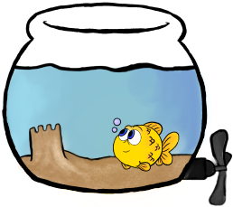

Oi! Her var det dypt... Lurer på hvor langt ned det går?

Welcome to the Twilight Zone! (300 m.u.h)

Heisann! Visste ikke at vi har fått undervannskino her?
Ser jo skikkelig realistisk ut, da...
Jeg tror jeg svømmer videre ned, sånn tilfelle det er ekte...
Jeg tror jeg svømmer videre ned, sånn tilfelle det er ekte...